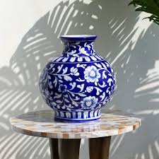
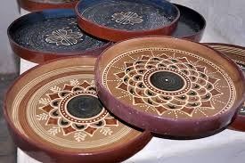
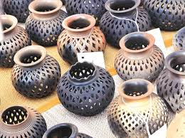
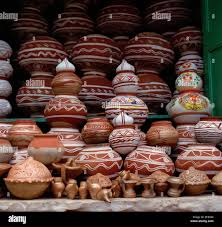

Blue Pottery
Rs 1200
Blue pottery is widely recognized as a traditional craft of Jaipur of Central Asian origin. The name 'blue pottery' comes from the eye-catching cobalt blue dye used to colour the pottery.

Ceramic
Rs 750
Traditional ceramics are clay-based, but high-performance or advanced ceramics are being developed from a far wider range of inorganic non-metal materials.

Himanchal pottery
Rs 1000
Himachal Pradesh is known for its diverse and vibrant pottery traditions, with Andretta and Dharamshala being notable centers.

Kagzi
Rs 1100
Kagzi pottery, a specialty from Alwar, Rajasthan, is known for its exceptional thinness and lightness, resembling paper.

Rajasthani Pottery
Rs 400
Rajasthan is renowned for its unique pottery, with blue pottery from Jaipur being the most distinctive and globally recognized.